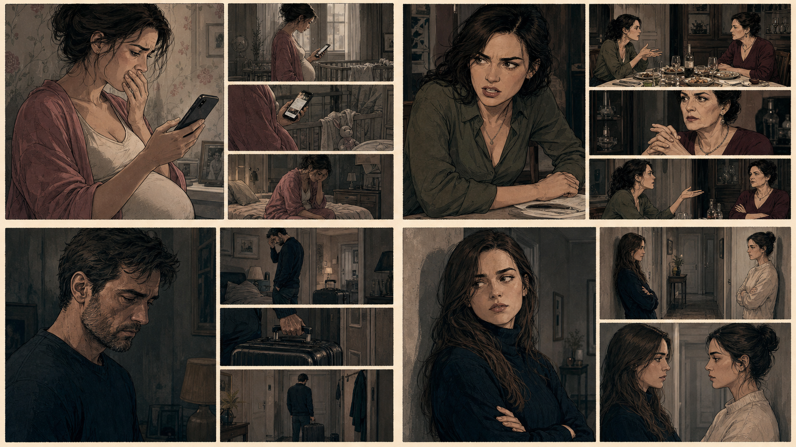
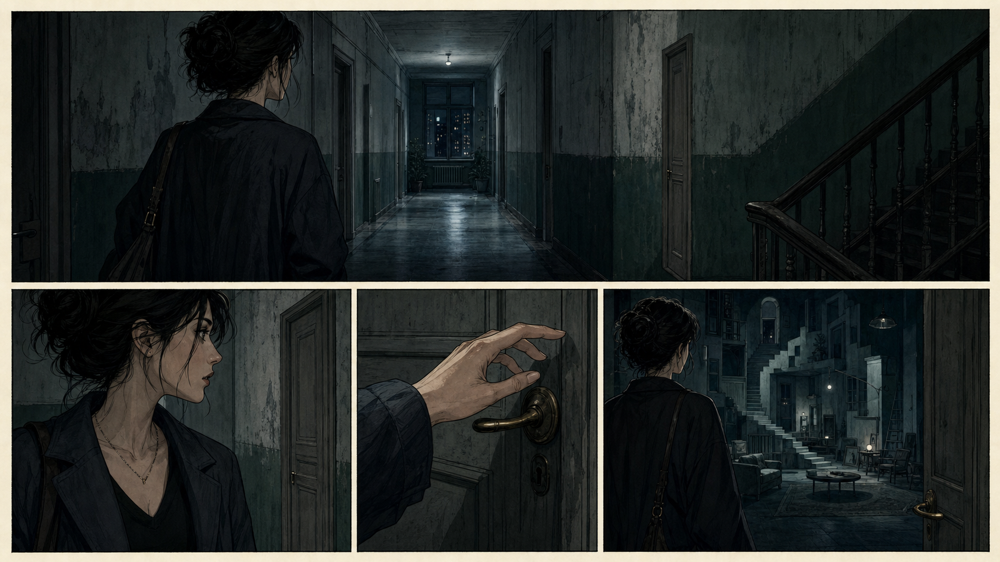
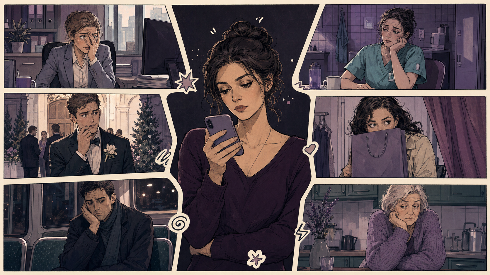

BUNDLE · НЕСКОЛЬКО ИСТОРИЙ
Сначала видна вся страница, затем камера читает отдельные истории.

SAGA · ОДНА ДЛИННАЯ ИСТОРИЯ
Панорама задаёт пространство, потом движение ведёт к важному открытию.

THREAD · ВОПРОС И ОТВЕТЫ
Центральный вопрос остаётся якорем, ответы читаются зигзагом.